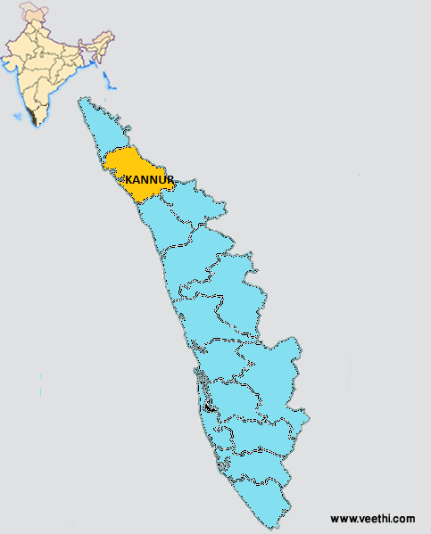
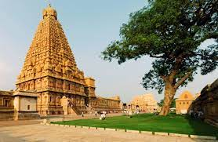

KANNUR

Kannur, formerly known in English as Cannanore, is a city and a Municipal Corporation in the state of Kerala, India. It is the administrative headquarters of the Kannur district and situated 274 kilometres (170 mi) north of the major port city & commercial hub Kochi & 137 kilometres (85 mi) south of the major port city & a commercial hub, Mangalore. During the period of British colonial rule in India, when Kannur was a part of the Malabar District (Madras Presidency), the city was known as Cannanore. Kannur is 6th largest urban agglomeration in Kerala.As of 2011 census, Kannur Municipal Corporation, the local body which administers mainland area of city, had a population of 232,486.
Kannur was the headquarters of one of the four most important dynasties on Malabar Coast namely Kolathunadu, along with the Zamorin of Calicut, Kingdom of Cochin, and Kingdom of Quilon. The Arakkal kingdom had right over the city of Kannur and Laccadive Islands in the late medieval period. Kannur municipality was formed on 1 November 1866 according to the Madras Act 10 of 1865 (Amendment of the Improvements in Towns act 1850)[7][8][9][10] of the British Indian Empire, along with the municipalities of Thalassery, Kozhikode, Palakkad, and Fort Kochi, making them the first modern municipalities in the state. It was upgraded into a municipal corporation in the year 2015.
Tourist Spots

Rajarajeshwara Temple